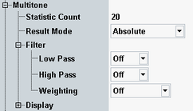

The "Multitone" measurement displays the individual audio levels at up to 20 different test tones, corresponding to 20 audio input frequencies. The results can be presented in a bargraph or in a table.
The number of test tones included in the multitone signal and the frequencies of the individual test tones are defined via the generator to which the measurement is coupled, see "Multitone Settings".
The following settings are specific for multitone measurements. They can be configured separately for analog and digital measurements. The description applies to both.

Configures the statistic count for multitone measurements. This parameter can also be configured within the general settings, see "General Settings (Analog)" and "General Settings (Digital)".
Remote command:Selects the display mode for the multitone results. You can display the levels of the individual test tones as absolute levels (dBV or dBFS) or as levels relative to a selected test tone (dB).
Remote command:The settings configure the individual filter stages of the AF analyzer. For a description of the filter types, see "AF Filter Settings".
Remote command:Analog measurement:
Digital measurement:
These settings configure the axes of the multitone result bargraph and select which traces are displayed.
These settings can also be accessed via hotkeys, see "Modifying Diagrams".
Remote command:Not applicable